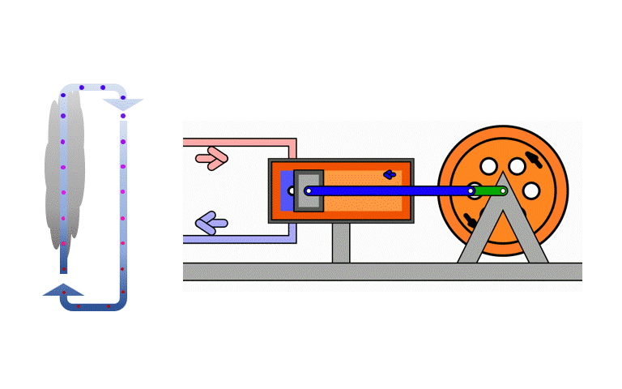

Relaxation-oscillator convection on Earth and Titan

- Global-mean precipitation on Earth is steady and continuous.
- Global-mean precipitation on Titan is rare, episodic, and very intense.
- A transition in moist convection - that is, convection involving condensation - from steady to episodic occurs on Earth at high surface temperatures.
- To explain this new behavior, we invoke the property of convection to act as a natural heat engine.
- If two basic conditions are met - (1) the entropy budget is balanced between radiative processes and convective turbulence and (2) convection must transport enough heat to offset atmospheric cooling to space - then we predict a breakdown of steady convection when the heat transported by convection exceeds the work that is performed.
- This is shown to hold in state-of-the-art convection-resolving simulations.
If your browser does not support embedded pdf files, you can download the pre-print here.
Earth, Titan, and the “hothouse” Earth represent 3 distinct planetary environments. The atmosphere of Titan, Saturn’s largest moon, is similar to Earth’s in that it is rich in nitrogen but, on Titan, it rains methane instead of water. Due to its distance from the sun, Titan experiences extremely low temperatures. And yet, there is over 100 times more precipitable methane in Titan’s atmosphere than precipitable water in Earth’s. This can be understood by the fact that methane is more volatile than water. While most of Earth's surface is covered in deep oceans, Titan is, for the most part, an arid desert with methane lakes at its poles.
Comparison of the global-mean precipitation on Earth and Titan (see the pre-print) reveals a fascinating dichotomy. Precipitation on Earth is steady and continuous, reflecting the fact that moist convection - that is, convection involving the condensation of water - is persistently ongoing. Titan, on the other hand, is non-precipitating most of the time. Precipitating storms on Titan are intense and short-lived and reoccur at semi-regular intervals. This unique weather produces Titan's distinct pattern of precipitation (middle plot) that resembles the waveform of a relaxed oscillator. It was recently revealed that there is an emergent dynamical similarity with respect to precipitation between Titan and the hothouse Earth. The term "hothouse” Earth is a concept referring to a hypothetical state of our planet characterized by significantly elevated temperatures, driven by increased concentrations of greenhouse gases. This scenario, often discussed in the context of climate change, represents a catastrophic consequence of alterations to Earth’s atmospheric composition with implications for the climate, clouds, and precipitation. In other words, the precipitation on Earth becomes Titan-like at very high surface temperatures. The mechanism underlying the transition in precipitation patterns is currently debated.